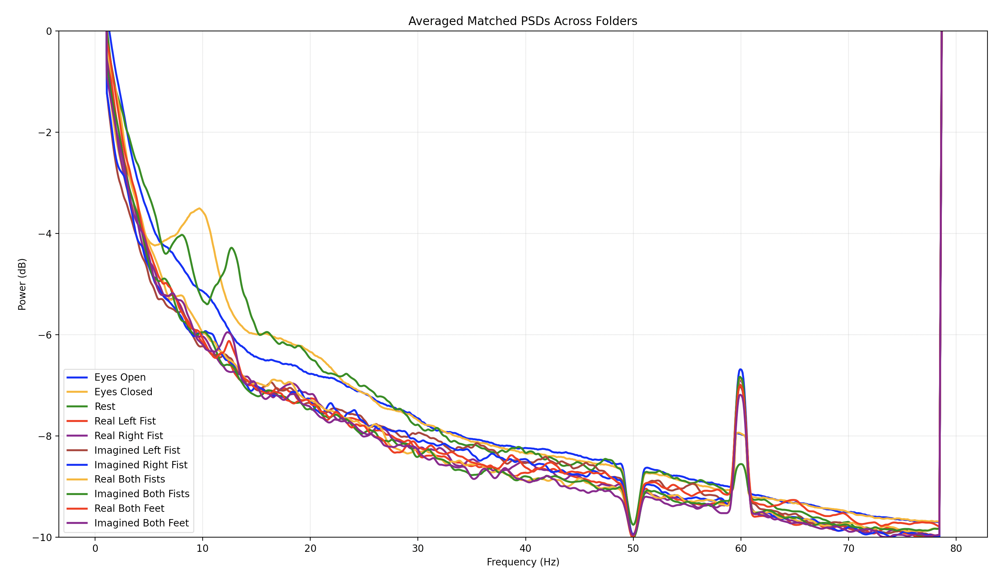

Welch PSD for all 11 movement categories with percentage-match filtering before averaging.
Do different movement categories have distinct power spectral density profiles? If so, a frequency-based feature set should be able to discriminate them. If PSDs look identical across classes regardless of movement type, the approach is fundamentally flawed. This script computes and compares normalized Welch PSDs across all 11 conditions to answer that question.
# Filter outliers: keep only files whose PSD matches ≥80% of others
def percentage_match(y1, y2):
matches = 0
for v1, v2 in zip(y1, y2):
if v1 == 0 and v2 == 0: matches += 1; continue
deviation = abs(v1 - v2) / abs(v1)
if deviation <= 0.15: # 15% tolerance
matches += 1
return matches / len(y1) * 100
# Pairs with ≥80% match are considered consistent within a class
MATCH_THRESHOLD = 80Normalizing to a fixed dB range before comparison ensures that differences in absolute amplitude don't affect shape-based matching. Two PSDs with the same spectral shape but different overall amplitudes should match; this normalization makes it work correctly across subjects with different electrode impedances and scalp-signal amplitudes.
Results showed that Rest, Eyes Open, and Eyes Closed had clearly distinct PSD profiles from each other and from the motor task categories. The four motor task categories (real and imagined fist and feet movements) were harder to distinguish — consistent with the known difficulty of the multi-class motor imagery problem.
